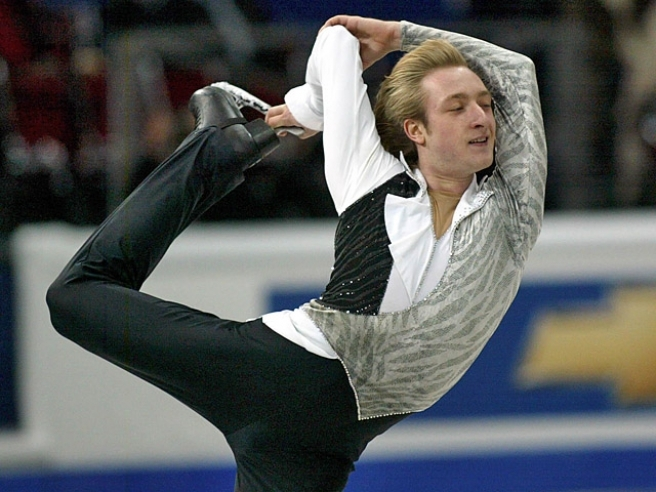
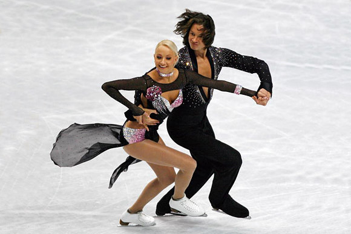
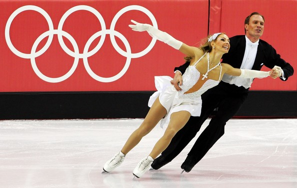
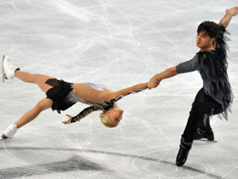
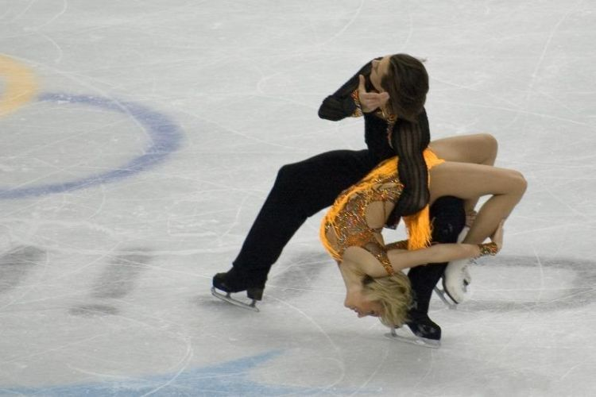

Фигурное катание
Самым музыкальным, ярким и артистичным видом спорта, который будет представлен в программе зимних Олимпийских игр в Сочи, по праву можно считать фигурное катание на коньках.
Во всем мире фигурное катание считают не просто спортом, а высшей степенью искусства.
Отрадно и то, что российские спортсмены внесли огромный вклад в развитие и становление этого вида спорта. История фигурного катания знает всего трех трехкратных олимпийских чемпионов: швед Гиллис Графстрем и Соня Хени из Норвегии в одиночном катании и россиянка Ирина Роднина в парном.
Фигурное катание на коньках в Россию привез из Европы Петр I, самостоятельно придумавший новый способ крепления коньков к сапогам. В 1865 году на Садовой улице в Юсуповском саду был открыт первый в истории России общественный каток. Фигурное катание подарило России первого олимпийского чемпиона – им стал Николай Панин-Коломенкин, выигравший золото на Играх IV Олимпиады в 1908 году в Лондоне в соревновательной программе, которая называлась «специальные фигуры».
Россиянин Панин-Коломенкин восторгался выступлениями американского фигуриста Джексона Гейнца, когда тот приехал с гастролями в Европу: «… он (Джексон Гейнц) показал изумленным европейцам совершенно неожиданные возможности исполнения связных последовательностей, стремительнейших фигур и элегантных ритмических танцев в красивейших постановках и грациознейших движениях тела. Влияние его искусства было колоссально. Оно послужило тем толчком, который вызвал огромный качественный скачок вперед и привел впоследствии к образованию новой формы проявления искусства».
В настоящее время на Олимпийских играх спортсмены состязаются в индивидуальных зачетах среди мужчин и женщин, в парном катании и танцах на льду.
Фигурист в одиночном катании должен продемонстрировать степень владения всеми группами элементов – спиралями, вращениями, прыжками, шагами. Чем выше качество и сложность исполняемых элементов, тем выше уровень спортсмена и тем больше баллов он получит за свое выступление. Обязательными критериями, которые учитываются судьями при выставлении оценок, являются: музыкальность, артистизм, эстетичность, пластичность, чистота выполняемых элементов и движений.
В парном катании перед фигуристами ставят задачу создания впечатления единства действий. Наряду с традиционными шагами, спиралями и прыжками, спортсмены в парном катании исполняют другие уникальные элементы, присущие только этому виду фигурного катания: поддержки, выбросы, тодесы, совместные и параллельные вращения, подкрутки. Здесь на первое место выходит синхронность исполнения движений.
Интересный факт
Коньки в Россию привез из Европы Петр I. Царь придумал новый способ крепления коньков — приделывал их прямо к сапогам.
В спортивных танцах на льду отсутствуют прыжки, выбросы и другие отличительные черты парного катания. Важной составляющей успеха является абсолютная синхронность, плавность исполняемых элементов, внешний вид самой пары, подобранное музыкальное сопровождение и образы партнеров.
Соревнования в одиночном, парном катании и в танцах на льду проходят в два этапа: первый этап – короткая программа (в танцах на льду – короткий танец), второй этап – произвольная программа. Выступление фигуристов оценивает судейская коллегия, исходя из заявленных спортсменами элементов и тех, с которыми они справились или не справились во время своих программ.
Впервые в программу зимних Олимпийских игр включили командное первенство среди фигуристов. От каждой страны должно быть представлено по два мужчины и по две женщины в одиночном катании и по одной паре в парном катании и в танцах на льду. Итоговые результаты суммируются, страна-победитель определяется по большей сумме баллов.
Российские спортсмены традиционно являются одними из лидеров мирового фигурного катания на коньках. Российская пара Татьяна Волосожар/Максим Траньков поедет в Сочи только за победой. Основную конкуренцию нашим фигуристам составят спортивные пары из Германии и Китая. Трем молодым российским парам в танцах на льду сначала придется пройти отбор на национальном первенстве, лишь здесь решится, кто именно будет защищать честь российского флага на домашней Олимпиаде. А в мужском одиночном катании на Олимпийских играх, возможно, примет участие ветеран мирового фигурного катания – обладатель трех медалей главных соревнований четырехлетия Евгений Плющенко.
{kind=link}
{kind=link}
{kind=link}
{kind=link}
{kind=link}